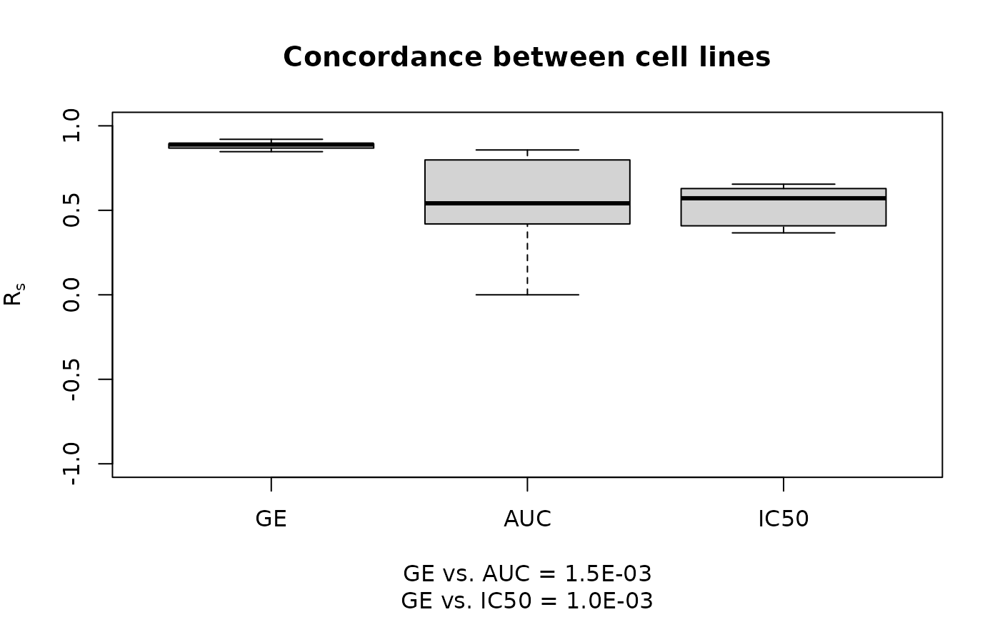

PharmacoGx: An R Package for Analysis of Large Pharmacogenomic Datasets
Petr Smirnov
Princess Margaret Cancer Centre, University Health Network, Toronto Canadapetr.smirnov@uhnresearch.ca
Christopher Eeles
christopher.eeles@uhnresearch.caZhaleh Safikhani
Princess Margaret Cancer Centre, University Health Network, Toronto CanadaDepartment of Medical Biophysics, University of Toronto, Toronto CanadaBenjamin Haibe-Kains
benjamin.haibe.kains@utoronto.ca Source:vignettes/PharmacoGx.Rmd
PharmacoGx.RmdIntroduction
Pharmacogenomics holds much potential to aid in discovering drug response biomarkers and developing novel targeted therapies, leading to development of precision medicine and working towards the goal of personalized therapy. Several large experiments have been conducted, both to molecularly characterize drug dose response across many cell lines, and to examine the molecular response to drug administration. However, the experiments lack a standardization of protocols and annotations, hindering meta-analysis across several experiments.
PharmacoGx was developed to address these challenges, by
providing a unified framework for downloading and analyzing large
pharmacogenomic datasets which are extensively curated to ensure maximum
overlap and consistency. PharmacoGx is based on a level of
abstraction from the raw experimental data, and allows bioinformaticians
and biologists to work with data at the level of genes, drugs and cell
lines. This provides a more intuitive interface and, in combination with
unified curation, simplifies analyses between multiple datasets.
To organize the data released by each experiment, we developed the PharmacoSet class. This class efficiently stores different types of data and facilitates interrogating the data by drug or cell line. The PharmacoSet is also versatile in its ability to deal with two distinct types of pharmacogenomic datasets. The first type, known as sensitivity datasets, are datasets where cell lines were profiled on the molecular level, and then tested for drug dose response. The second type of dataset is the perturbation dataset. These types of datasets profile a cell line on the molecular level before and after administration of a compound, to characterize the action of the compound on the molecular level.
With the first release of PharmacoGx we have fully curated and created PharmacoSet objects for three publicly available large pharmacogenomic datasets. Two of these datasets are of the sensitivity type. These are the Genomics of Drug Sensitivity in Cancer Project (GDSC) (Garnett et al. 2012) and the Cancer Cell Line Encyclopedia (CCLE) (Barretina et al. 2012). The third dataset is of the perturbation type, the Connectivity Map (CMAP) project (Lamb et al. 2006).
Furthermore, PharmacoGx provides a suite of parallelized
functions which facilitate drug response biomarker discovery, and
molecular drug characterization. This vignette will provide two example
analysis case studies. The first will be comparing gene expression and
drug sensitivity measures across the CCLE and GDSC projects. The second
case study will interrogate the CMAP database with a known signature of
up and down regulated genes for HDAC inhibitors as published in [Glaser et al. (2003)}. Using the Connectivity
Score as defined in (Lamb et al. 2006), it
will be seen that known HDAC inhibitors have a high numerical score and
high significance.
For the purpose of this vignette, an extremely minuscule subset of all three PharmacoSet objects are included with the package as example data. They are included for illustrative purposes only, and the results obtained with them will likely be meaningless.
Installation and Settings
PharmacoGx requires that several packages are installed.
However, all dependencies are available from CRAN or Bioconductor.
if (!requireNamespace("BiocManager", quietly=TRUE))
install.packages("BiocManager")
BiocManager::install('PharmacoGx')Load PharamacoGx into your current workspace:
library(PharmacoGx)Downloading PharmacoSet Objects
We have made the PharmacoSet objects of the curated datasets
available for download using functions provided in the package. A table
of available PharmacoSet objects can be obtained by using the
availablePSets() function. Any of the PharmacoSets in the
table can then be downloaded by calling downloadPSet, which
saves the datasets into a directory of the users choice, and returns the
data into the R session.
availablePSets()
GDSC <- downloadPSet("GDSC_2020(v2-8.2)")Downlading Drug Signatures
The package also provides tools to compute drug perturbation and
sensitivity signatures, as explained below. However, the computation of
the perturbation signatures is very lengthy, so for users’ convenience
we have precomputed the signatures for our perturbation PharmacoSet
objects and made them available for download using the function
downloadPertSig().
Case Study
(In)Consistency across large pharmacogenomic studies
Our first case study illustrates the functions for analysis of the
sensitivity type of dataset. The case study will investigate
the consistency between the GDSC and CCLE datasets, recreating the
analysis similar to our Inconsistency in Large Pharmacogenomic
Studies paper (Haibe-Kains et al.
2013). In both CCLE and GDSC, the transcriptome of cells was
profiled using an Affymatrix microarray chip. Cells were also tested for
their response to increasing concentrations of various compounds, and
form this the IC50 and AUC were computed. However, the cell and drugs
names used between the two datasets were not consistent. Furthermore,
two different microarray platforms were used. However,
PharmacoGx allows us to overcome these differences to do a
comparative study between these two datasets.
GDSC was profiled using the hgu133a platform, while CCLE was profiled
with the expanded hgu133plus2 platform. While in this case the hgu133a
is almost a strict subset of hgu133plus2 platform, the expression
information in PharmacoSet objects is summarized by
Ensemble Gene Ids, allowing datasets with different platforms to be
directly compared. The probe to gene mapping is done using the
BrainArray customCDF for each platform (Sabatti,
Karsten, and Geschwind 2002).
To begin, you would load the datasets from disk or download them using the downloadPSet function above. In the following example, we use the toy datasets provided with the package to illustrate the process, but to recreate the full analysis the full PharmacoSets have to be downloaded.
We want to investigate the consistency of the data between the two datasets. The common intersection between the datasets can then be found using intersectPSet. We create a summary of the gene expression and drug sensitivity measures for both datasets, so we are left with one gene expression profile and one sensitivity profile per cell line within each dataset. We can then compare the gene expression and sensitivity measures between the datasets using a standard correlation coefficient.
library(Biobase)
library(SummarizedExperiment)
library(S4Vectors)
library(PharmacoGx)
data("GDSCsmall")
data("CCLEsmall")
commonGenes <- intersect(fNames(GDSCsmall, "rna"),
fNames(CCLEsmall,"rna"))
common <- intersectPSet(list('CCLE'=CCLEsmall,
'GDSC'=GDSCsmall),
intersectOn=c("cell.lines", "drugs"),
strictIntersect=TRUE)
GDSC.auc <- summarizeSensitivityProfiles(
common$GDSC,
sensitivity.measure='auc_published',
summary.stat="median",
verbose=FALSE)
CCLE.auc <- summarizeSensitivityProfiles(
common$CCLE,
sensitivity.measure='auc_published',
summary.stat="median",
verbose=FALSE)
GDSC.ic50 <- summarizeSensitivityProfiles(
common$GDSC,
sensitivity.measure='ic50_published',
summary.stat="median",
verbose=FALSE)
CCLE.ic50 <- summarizeSensitivityProfiles(
common$CCLE,
sensitivity.measure='ic50_published',
summary.stat="median",
verbose=FALSE)
GDSCexpression <- summarizeMolecularProfiles(common$GDSC,
cellNames(common$GDSC),
mDataType="rna",
features=commonGenes,
verbose=FALSE)
CCLEexpression <- summarizeMolecularProfiles(common$CCLE,
cellNames(common$CCLE),
mDataType="rna",
features=commonGenes,
verbose=FALSE)
gg <- fNames(common[[1]], 'rna')
cc <- cellNames(common[[1]])
ge.cor <- sapply(cc, function (x, d1, d2) {
stats::cor(d1[ , x], d2[ , x], method="spearman",
use="pairwise.complete.obs")
## TO DO:: Ensure all assays are name so we can call by name instead of index
}, d1=assay(GDSCexpression, 1), d2=assay(CCLEexpression, 1))
ic50.cor <- sapply(cc, function (x, d1, d2) {
stats::cor(d1[, x], d2[ , x], method="spearman",
use="pairwise.complete.obs")
}, d1=GDSC.ic50, d2=CCLE.ic50)
auc.cor <- sapply(cc, function (x, d1, d2) {
stats::cor(d1[ , x], d2[ , x], method="spearman",
use="pairwise.complete.obs")
}, d1=GDSC.auc, d2=CCLE.auc)
w1 <- stats::wilcox.test(x=ge.cor, y=auc.cor,
conf.int=TRUE, exact=FALSE)
w2 <- stats::wilcox.test(x=ge.cor, y=ic50.cor,
conf.int=TRUE, exact=FALSE)
yylim <- c(-1, 1)
ss <- sprintf("GE vs. AUC = %.1E\nGE vs. IC50 = %.1E",
w1$p.value, w2$p.value)
boxplot(list("GE"=ge.cor,
"AUC"=auc.cor,
"IC50"=ic50.cor),
main="Concordance between cell lines",
ylab=expression(R[s]),
sub=ss,
ylim=yylim,
col="lightgrey",
pch=20,
border="black")
Query the Connectivity Map
The second case study illustrates the analysis of a perturbation type datasets, where the changes in cellular molecular profiles are compared before and after administering a compound to the cell line. Of these datasets, we have currently curated and made available for download the Connectivity Map (CMAP) dataset (Lamb et al. 2006).
For this case study, we will recreate an analysis from the paper by
Lamb et al., in which a known signature for HDAC inhibitors (Glaser et al. 2003) is used to recover drugs in
the CMAP dataset that are also known HDAC inhibitors. For this example,
the package includes this signature, already mapped to the gene level,
and it can be loaded by calling data(HDAC\_genes).
Once again, we load the dataset, downloading it if needed using
downloadPSet . We then recreate drug signatures for each
drug using the function drugPerturbationSig to preform
statistical modelling of the transcriptomic response to the application
of each drug. We then compare the observed up-regulated and
down-regulated genes to a the known HDAC signature, using the GSEA
connectivity score to determine the correlation between the two
signatures.
library(PharmacoGx)
library(pander)
data(CMAPsmall)
drug.perturbation <- drugPerturbationSig(CMAPsmall,
mDataType="rna",
verbose=FALSE)
data(HDAC_genes)
res <- apply(drug.perturbation[,,c("tstat", "fdr")],
2, function(x, HDAC){
return(connectivityScore(x=x,
y=HDAC[,2,drop=FALSE],
method="fgsea", nperm=100))
}, HDAC=HDAC_genes)
rownames(res) <- c("Connectivity", "P Value")
res <- t(res)
res <- res[order(res[,1], decreasing=TRUE),]
pander::pandoc.table(res,
caption='Connectivity Score results for HDAC inhibitor gene signature.',
style = 'rmarkdown')| Connectivity | P Value | |
|---|---|---|
| vorinostat | 0.9449 | 0.003946 |
| alvespimycin | 0.8831 | 0.009112 |
| acetylsalicylic acid | 0 | 1 |
| rosiglitazone | -0.714 | 0.01476 |
| pioglitazone | -0.7335 | 0.1059 |
As we can see, the known HDAC inhibitor Varinostat has a very strong connectivity score, as well as a very high significance as determined by permutation testing, in comparison to the other drugs, which score poorly.
This example serves as a validation of the method, and demonstrates
the ease with which drug perturbation analysis can be done using
PharmacoGx. While in this case we were matching a drug
signature with a drug class signature, this method can also be used in
the discovery of drugs that are anti-correlated with known disease
signatures, to look for potential new treatments and drug
repurposing.
Estimating Drug Sensitivity Measures
PharmacoGx includes functions to calculate estimated AUC
(Area Under drug response Curve) and IC50 values from drugs dose
response experiments that measure cell viability after applications of
varying concentrations of drug. Additionally, these measures are
recomputed for every sensitivity PharmacoSet we
create and included alongside any measures published with the original
data. The AUC measures originally published are labelled as
auc_published, while the recomputed measures are labelled as
auc_recomputed, and likewise for the IC50.
While the PharmacoSets already contain the recomputed data, the AUC and IC50 can be calculated for arbitrary data using the computeIC50 and computeAUC functions. The AUC can be calculated using either the area under the curve defined by the actual points recorded, or the area under the curve fitted to the data.
Curve Fitting
While AUC can be numerically calculated without curve fitting, to estimate the IC50 a drug dose response curve must be fit to the data.The dose-response curves are fitted to the equation \[ y = E_{\infty} + \frac{ 1 - E_{\infty} }{1+(\frac{x}{IC50})^{HS}} \] where the maximum viability is normalized to be \(y = y(0) = 1\), \(E_{\infty}\) denotes the minimum possible viability achieved by administering any amount of the drug, \(IC50\) is the concentration at which viability is reduced to half of the viability observed in the presence of an arbitrarily large concentration of drug, and \(HS\) is a parameter describing the cooperativity of binding. \(HS < 1\) denotes negative binding cooperativity, \(HS = 1\) denotes noncooperative binding, and \(HS > 1\) denotes positive binding cooperativity. The parameters of the curves are fitted using the least squares optimization framework. The fitting of these curves to arbitrary points is implemented by the logLogisticRegression function.
Plotting Drug-Dose Response Data
Drug-Dose response data included in the PharmacoSet objects can be
conviniently plotted using the drugDoseResponseCurve
function. Given a list of PharmacoSets, a drug name and a cell name, it
will plot the drug dose response curves for the given cell-drug
combination in each dataset, allowing direct comparisons of data between
datasets.
Gene-Drug Association Modelling
PharmacoGx provides methods to model the association
between drugs and molecular data such as transcriptomics, genomics and
proteomics.
Sensitivity studies allow the discovery of molecular features that improve or inhibit the sensitivity of cell lines to various compounds, by looking at the association between the expression of the feature and the response towards each compound. This allows the selection of drugs to be tailored to each specific patient based on the expressed known sensitivity biomarkers. The function drugSensitivitySig models these associations.
Perturbation studies on the other hand look at the molecular profiles of a cell before and after application of a drug, and therefore can characterize the action of a drug on the molecular level. It is hypothesized that drugs which act to down-regulate expression of known disease biomarkers would be effective in reversing the cell from a diseased to healthy state. The function drugPerturbationSig models the molecular profiles of drugs tested in a perturbation dataset.
Sensitivity Modelling
The association between molecular features and response to a given drug is modelled using a linear regression model adjusted for tissue source:
\[ Y = \beta_{0} + \beta_{i}G_i + \beta_{t}T + \beta_{b}B \]
where \(Y\) denotes the drug sensitivity variable, \(G_i\), \(T\) and \(B\) denote the expression of gene i, the tissue source and the experimental batch respectively, and \(\beta\)s are the regression coefficients. The strength of gene-drug association is quantified by \(\beta_i\), above and beyond the relationship between drug sensitivity and tissue source. The variables Y and G are scaled (standard deviation equals to 1) to estimate standardized coefficients from the linear model. Significance of the gene-drug association is estimated by the statistical significance of \(\beta_i\) (two-sided t test). P-values are then corrected for multiple testing using the false discovery rate (FDR) approach.
As an example of the efficacy of the modelling approach, we can model the significance of the association between two drugs and their known biomarkers in CCLE. We examine the association between drug 17-AAG and gene NQO1, as well as drug PD-0325901 and gene BRAF:
library(pander)
data(CCLEsmall)
features <- fNames(CCLEsmall, "rna")[
which(featureInfo(CCLEsmall,
"rna")$Symbol == "NQO1")]
sig.rna <- drugSensitivitySig(object=CCLEsmall,
mDataType="rna",
drugs=c("17-AAG"),
features=features,
sensitivity.measure="auc_published",
molecular.summary.stat="median",
sensitivity.summary.stat="median",
verbose=FALSE)
sig.mut <- drugSensitivitySig(object=CCLEsmall,
mDataType="mutation",
drugs=c("PD-0325901"),
features="BRAF",
sensitivity.measure="auc_published",
molecular.summary.stat="and",
sensitivity.summary.stat="median",
verbose=FALSE)
sig <- rbind(sig.rna, sig.mut)
rownames(sig) <- c("17-AAG + NQO1","PD-0325901 + BRAF")
colnames(sig) <- dimnames(sig.mut)[[3]]
pander::pandoc.table(t(sig), style = "rmarkdown", caption='P Value of Gene-Drug Association' )| 17-AAG + NQO1 | PD-0325901 + BRAF | |
|---|---|---|
| estimate | 0.601 | 0.8252 |
| se | 0.05368 | 0.1339 |
| n | 492 | 472 |
| tstat | 11.2 | 6.161 |
| fstat | 125.3 | 37.95 |
| pvalue | 6.034e-26 | 1.613e-09 |
| df | 469 | 449 |
| fdr | 6.034e-26 | 1.613e-09 |
Perturbation Modelling
The molecular response profile of a given drug is modelled as a linear regression model adjusted experimental batch effects, cell specific differences, and duration of experiment to isolate the effect of the concentration of the drug applied:
\[ G = \beta_{0} + \beta_{i}C_i + \beta_{t}T + \beta_{d}D + \beta_{b}B \]
where \(G\) denotes the molecular feature expression (gene), \(C_i\) denotes the concentration of the compound applied, \(T\) the cell line identity, \(D\) denotes the duration of the experiment, \(B\) denotes the experimental batch, and \(\beta\)s are the regression coefficients. The strength of feature response is quantified by \(\beta_i\). Unlike the sensitivity signatures, the \(G\) and \(C\) variables are unscaled. Significance of the gene-drug association is estimated by the statistical significance of \(\beta_i\), calculated using an F-test on the improvement in fit after the inclusion of the term. P-values are then corrected for multiple testing using the false discovery rate (FDR) approach.
Connectivity Scoring
The package also provides two methods for quantifying the similarity between two molecular signatures of the form returned by drugPerturbationSig and drugSensitivitySig, or a set of up and down regulated genes as part of a disease signature. The two methods are the GSEA method as introduced by Subramanian et at (Subramanian et al. 2005), and GWC, a method based on a weighted Spearman correlation coefficient. Both methods are implemented by the connectivityScore function.
GSEA
The GSEA method is implemented to compare a signature returned by drugPerturbationSig with a known set of up and down regulated genes in a disease state. For the disease signature, the function expects a vector of features with a value, either binary (1, -1) or continuous, where the sign signifies if the gene is up or down regulated in the disease. The names of the vector are expected to be the feature names, matching the feature names used in the drug signature. The function then returns a GSEA score measuring the concordance of the disease signature to the drug signature, as well as an estimated P-Value for the significance of the connectivity determined by permutation testing.
GWC
The GWC method (Genome Wide Correlation) is implemented to compare two signatures of the same length, such as two drug signatures returned by drugPerturbationSig. The score is a Spearman correlation weighted by the normalized negative logarithm significance of each value. The normalization is done so that datasets of different size can be compared without concern for lower p-values in one dataset due to larger sample sizes.
More precisely, take \(X_i\) and \(Y_i\) to be the ranks of the first and second set of data respectively, and \(Px_i\), \(Py_i\) to be the p-values of those observations. The weight for each pair of observations is:
\[ Wx_i = \frac{-\log_{10}(Px_i)}{\sum_{i}-\log_{10}(Px_i)} \]
\[ Wy_i = \frac{-\log_{10}(Py_i)}{\sum_{i}-\log_{10}(Py_i)} \]
\[ W_i = Wx_i + Wy_i \]
If we further define the weighted mean as follows: \[ m(X;W) = \frac{\sum_i W_i X_i}{\sum_i{W_i}} \]
Then the weighted correlation is given by:
\[ cor(X,Y,W) = \frac{\frac{\sum_i W_i (X_i - m(X;W))(Y_i - m(Y,W))}{\sum_i W_i}}{\sqrt{(\frac{\sum_i W_i (X_i - m(X;W))^2}{\sum_i W_i}) (\frac{\sum_i W_i (Y_i - m(Y;W))^2}{\sum_i W_i})}} \]
This correlation therefore takes into account not only the ranking of each feature in a signature, but also of the significance of each rank.
Acknowledgements
The authors of the package would like to thank the investigators of the Genomics of Drug Sensitivity in Cancer Project, the Cancer Cell Line Encyclopedia and the Connectivity Map Project who have made their invaluable data available to the scientific community. We would also like to thank Mark Freeman for contributing the code for MLE fitting drug-dose response curves towards this package. We are indebted to Nehme El-Hachem, Donald Wang and Adrian She for their contributions towards the accurate curation of the datasets. Finally, it is important to acknowledge all the members of the Benjamin Haibe-Kains lab for their contribution towards testing and feedback during the design of the package.
Session Info
# set eval = FALSE if you don't want this info (useful for reproducibility) to appear
sessionInfo()R version 4.2.1 (2022-06-23)
Platform: x86_64-pc-linux-gnu (64-bit)
Running under: Ubuntu 22.04.1 LTS
Matrix products: default
BLAS: /usr/lib/x86_64-linux-gnu/openblas-pthread/libblas.so.3
LAPACK: /usr/lib/x86_64-linux-gnu/openblas-pthread/libopenblasp-r0.3.20.so
locale:
[1] LC_CTYPE=C.UTF-8 LC_NUMERIC=C LC_TIME=C.UTF-8
[4] LC_COLLATE=C.UTF-8 LC_MONETARY=C.UTF-8 LC_MESSAGES=C.UTF-8
[7] LC_PAPER=C.UTF-8 LC_NAME=C LC_ADDRESS=C
[10] LC_TELEPHONE=C LC_MEASUREMENT=C.UTF-8 LC_IDENTIFICATION=C
attached base packages:
[1] stats4 stats graphics grDevices utils datasets methods
[8] base
other attached packages:
[1] pander_0.6.5 PharmacoGx_3.1.7
[3] CoreGx_2.2.0 SummarizedExperiment_1.28.0
[5] GenomicRanges_1.50.1 GenomeInfoDb_1.34.4
[7] IRanges_2.32.0 S4Vectors_0.36.1
[9] MatrixGenerics_1.10.0 matrixStats_0.63.0
[11] Biobase_2.58.0 BiocGenerics_0.44.0
[13] knitcitations_1.0.12 knitr_1.41
[15] BiocStyle_2.26.0
loaded via a namespace (and not attached):
[1] fgsea_1.24.0 colorspace_2.0-3
[3] ellipsis_0.3.2 rprojroot_2.0.3
[5] lsa_0.73.3 XVector_0.38.0
[7] fs_1.5.2 SnowballC_0.7.0
[9] DT_0.26 MultiAssayExperiment_1.24.0
[11] fansi_1.0.3 lubridate_1.9.0
[13] RefManageR_1.4.0 xml2_1.3.3
[15] codetools_0.2-18 cachem_1.0.6
[17] jsonlite_1.8.3 magicaxis_2.2.14
[19] cluster_2.1.3 shinydashboard_0.7.2
[21] shiny_1.7.3 mapproj_1.2.9
[23] BiocManager_1.30.19 compiler_4.2.1
[25] httr_1.4.4 backports_1.4.1
[27] Matrix_1.4-1 fastmap_1.1.0
[29] bench_1.1.2 limma_3.54.0
[31] cli_3.4.1 later_1.3.0
[33] visNetwork_2.1.2 htmltools_0.5.3
[35] tools_4.2.1 igraph_1.3.5
[37] gtable_0.3.1 glue_1.6.2
[39] GenomeInfoDbData_1.2.9 reshape2_1.4.4
[41] RANN_2.6.1 dplyr_1.0.10
[43] maps_3.4.1 fastmatch_1.1-3
[45] Rcpp_1.0.9 slam_0.1-50
[47] jquerylib_0.1.4 pkgdown_2.0.6
[49] vctrs_0.5.1 BumpyMatrix_1.6.0
[51] xfun_0.35 stringr_1.5.0
[53] timechange_0.1.1 mime_0.12
[55] lifecycle_1.0.3 gtools_3.9.4
[57] MASS_7.3-57 zlibbioc_1.44.0
[59] scales_1.2.1 ragg_1.2.4
[61] promises_1.2.0.1 relations_0.6-12
[63] parallel_4.2.1 RColorBrewer_1.1-3
[65] sets_1.0-21 yaml_2.3.6
[67] memoise_2.0.1 downloader_0.4
[69] ggplot2_3.4.0 sass_0.4.4
[71] stringi_1.7.8 highr_0.9
[73] NISTunits_1.0.1 desc_1.4.2
[75] plotrix_3.8-2 checkmate_2.1.0
[77] caTools_1.18.2 boot_1.3-28
[79] BiocParallel_1.32.4 bibtex_0.5.0
[81] rlang_1.0.6 pkgconfig_2.0.3
[83] systemfonts_1.0.4 bitops_1.0-7
[85] pracma_2.4.2 evaluate_0.18
[87] lattice_0.20-45 purrr_0.3.5
[89] htmlwidgets_1.5.4 tidyselect_1.2.0
[91] cowplot_1.1.1 plyr_1.8.8
[93] magrittr_2.0.3 bookdown_0.30
[95] R6_2.5.1 gplots_3.1.3
[97] generics_0.1.3 sm_2.2-5.7.1
[99] DelayedArray_0.24.0 pillar_1.8.1
[101] RCurl_1.98-1.9 tibble_3.1.8
[103] crayon_1.5.2 utf8_1.2.2
[105] KernSmooth_2.23-20 rmarkdown_2.18
[107] grid_4.2.1 data.table_1.14.6
[109] marray_1.76.0 piano_2.14.0
[111] digest_0.6.30 xtable_1.8-4
[113] httpuv_1.6.6 textshaping_0.3.6
[115] celestial_1.4.6 coop_0.6-3
[117] munsell_0.5.0 bslib_0.4.1
[119] shinyjs_2.1.0